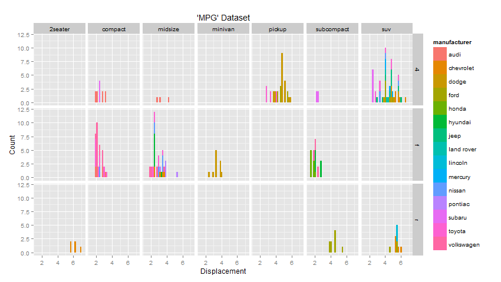

The R language is one of the easiest, and most simple environments to easily commmunicate your views, research and findings, all with very few or minimal lines of code!
We will show you how...
2014
The R language is one of the easiest, and most simple environments to easily commmunicate your views, research and findings, all with very few or minimal lines of code!
We will show you how...
With our training, you will learn how to generate simple graphical plots such as this:
with(cars, hist(dist, xlab="Distance",
main="'Cars' Dataset\nFrequency of Distance Covered", col="red"))
Or more informative or multiple plots such as this:
qplot(displ, data=mpg, fill=manufacturer, facets=drv~class,
xlab="Displacement", ylab="Count", main="'MPG' Dataset")

We'll also be teaching you how to make interactive plots such as this...
For example, here is a barplot of the 'HairEyeColor' dataset.
You can even employ such interactivity for educational purposes!
How many colours are in the spectrum of a rainbow?
Remember the acronym 'ROYGBIV'?
There are 7 colours in the spectrum of a rainbow:
the first letter of each make up the acronym ROYGBIV
This entire presentation (writing, effects, graphics, publishing) was done solely with R (in RStudio) using R's slidify and Rpres packages.
Click any of the following: